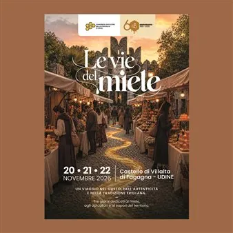

da ven 20 nov a dom 22 nov
Le vie del miele
Un viaggio straordinario nel gusto, nell’autenticità e nella tradizione friulana. Il Castello di Villalta di Fagagna (UD) si prepara ad accogliere, dal 20 al 22 novembre 2026, la manifestazione “Le vie del miele”, un grande evento celebrativo organizzato in occasione del 60°…
 Indicazioni
Indicazioni
- Costi e prenotazioni
- Costo non indicato · Prenotazione non indicata
- Programma
- Programma da verificare. Apri la fonte ufficiale per orari e possibili aggiornamenti.
- In caso di maltempo
- Nessuna indicazione specifica pubblicata.
- Note
- Acquisito automaticamente dalla fonte.
L’EVENTO
Descrizione completa
Un viaggio straordinario nel gusto, nell’autenticità e nella tradizione friulana. Il Castello di Villalta di Fagagna (UD) si prepara ad accogliere, dal 20 al 22 novembre 2026 , la manifestazione “Le vie del miele” , un grande evento celebrativo organizzato in occasione del 60° anniversario dalla fondazione del Consorzio Apicoltori della Provincia di Udine (1966-2026) . Tre giornate interamente dedicate al miele, agli apicoltori locali e ai sapori d’eccellenza del territorio, ospitate in una location suggestiva e completamente al coperto. L’apertura ufficiale della manifestazione è affidata a un momento di profondo confronto e approfondimento istituzionale con la tavola rotonda dal titolo: “Non è tutto miele quel che luccica. Origine, salubrità e trasparenza: la sfida del miele friulano di fronte all’invasione del sottocosto” . All’incontro prenderanno parte rappresentanti degli ispettorati antifrode, associazioni dei consumatori, organizzazioni di produttori e della grande distribuzione organizzata. L’evento sarà moderato e condotto d’eccezione da Patrizio Roversi . Una serata speciale e riservata ai soci e agli apicoltori del Friuli-Venezia Giulia per celebrare insieme i traguardi storici del Consorzio. La serata, condotta dalla giornalista Elisa Michellut , prevede: I festeggiamenti ufficiali per i 60 anni del Consorzio. Le premiazioni del Concorso Mieli di Pantianicco . La consegna di riconoscimenti alle storiche dipendenti e ai dipendenti. La presentazione ufficiale e la premiazione del nuovo logo del Consorzio , realizzato dagli studenti dell’Istituto ITG G.G. Marinoni. La serata si concluderà con un momento conviviale per festeggiare tutti insieme. Come registrarsi e partecipare a sabato 21 novembre Per partecipare è indispensabile compilare il modulo online . Ogni socio può partecipare accompagnato da un familiare. In caso di figli, anche loro sono i benvenuti! Nel modulo andrà specificata chiaramente l’eventuale presenza dell’accompagnatore e/o dei figli. Link di registrazione: Per registrarsi all’evento compilare il modulo al seguente link: https://forms.gle/zmR89sJ2HNC2qboZ7 Scadenza: Per consentire una perfetta organizzazione della serata, della disponibilità dei posti a sedere e del catering, chiediamo di confermare la presenza ENTRO E NON OLTRE venerdì 13 novembre . Una giornata ricca di appuntamenti aperti a tutto il pubblico, tra sapori, cultura e intrattenimento: Ore 9.30: Apertura del Mercato dei mieli di qualità e dei prodotti locali . Ore 10.00: Show cooking curato dagli allievi dell’Istituto “Stringher” e laboratori di degustazione del miele a cura di Roberto Colombo dell’Albo Nazionale Assaggiatori Miele. Ore 11.00: Consegna dei riconoscimenti ai ragazzi dell’ITG G.G. Marinoni per l’elaborazione del nuovo logo. Special Guest: Il celebre cuoco Luca Pappagallo sarà il protagonista della giornata e, dalle ore 14.30 , sarà a disposizione del pubblico. Ore 15.00: Show cooking esclusivo dedicato all’utilizzo del miele in cucina, a cura del “Cuciniere curioso” Luca Pappagallo . L’evento si terrà al coperto e metterà a disposizione: Un punto di ristoro con cibi caldi, dolci e bevande. Animazione per bambini presente durante tutta la giornata di domenica. Vi aspettiamo numerosi al Castello di Villalta per celebrare insieme la grande tradizione apistica friulana! LE VIE DEL MIELE – FLYER E PROGRAMMA
IL PROGRAMMA
Programma e orari
Appuntamenti raccolti dalle fonti elencate. Dove manca un orario, non è ancora disponibile in questa scheda.
Programma pubblicato
- Ore 9.30:
- Ore 10.00:
- Ore 11.00:
- ore 14.30
- Ore 15.00:
INFORMAZIONI UTILI
Prima di partire
- Controllare la fonte prima di partire.
ORGANIZZAZIONE